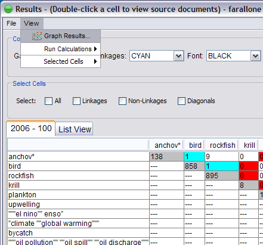
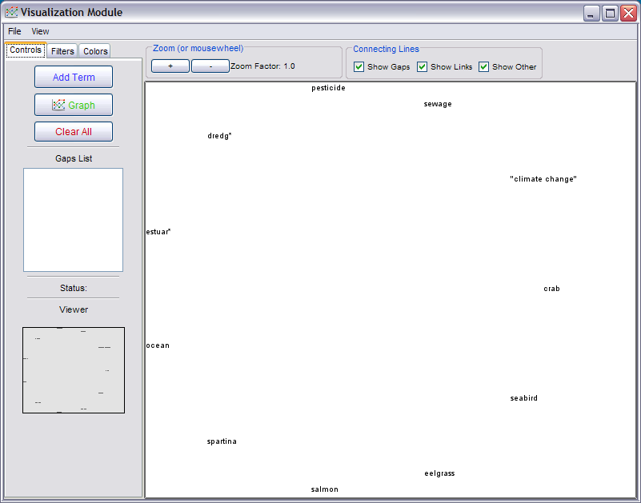
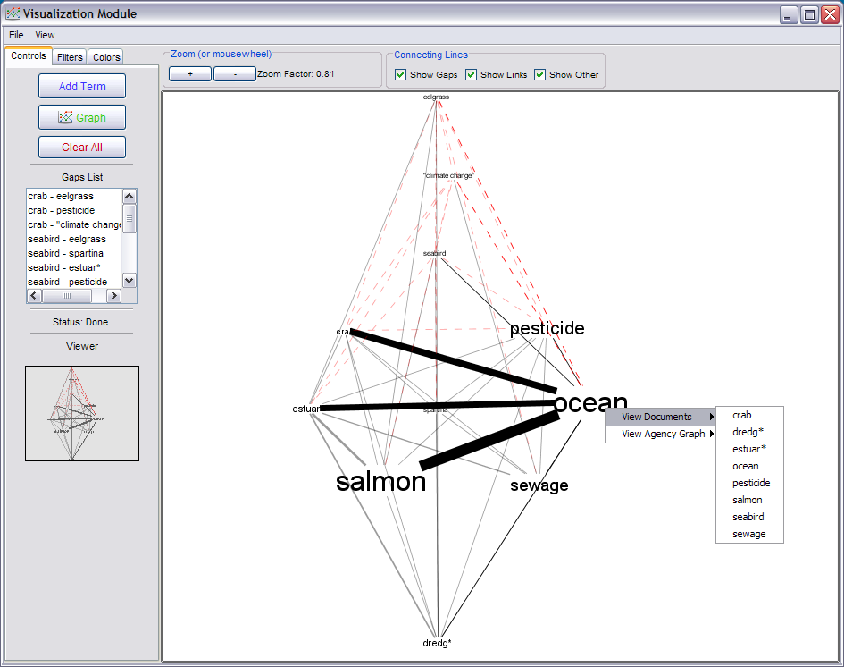
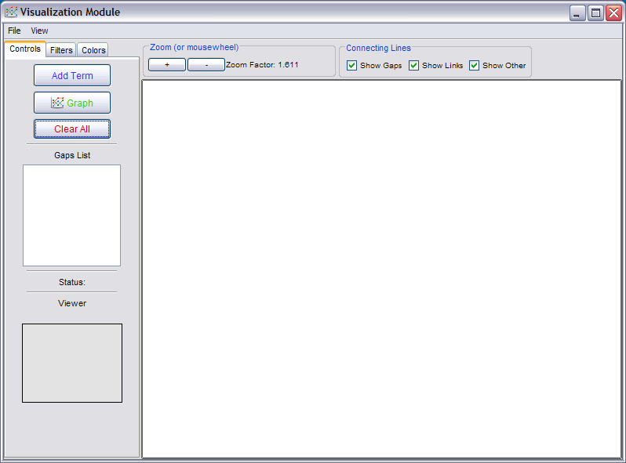
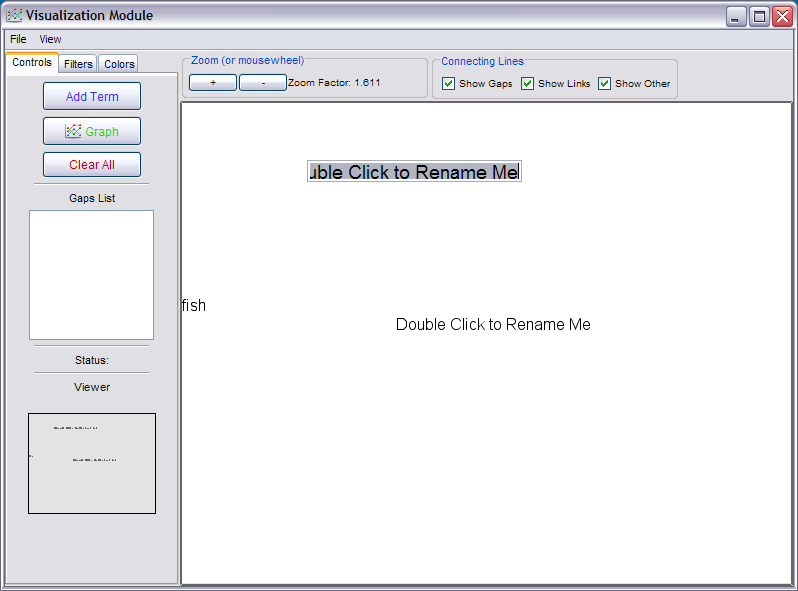

This module allows you to graph relationships within ecosystem models. The model components (terms) are automatically loaded into the Visualization module when you enter from the results page in a Gap Analysis, otherwise terms are entered manually when entering from the main menu.
To display a graph of the results, select Graph Results under the View menu from the Results screen in the Gap Analysis module.

The visualization module will open, containing the elements of your ecosystem:

Click the green Graph button in the left menu to generate a network diagram based on the occurence of ecosystem elements in the document collection. Terms are sized based on the number of times they occur. Thus, the largest terms occur the most (relative to the other terms). Terms with smaller text, therefore, occur in less sections than the larger ones. A line is drawn between two elements if they co-occur at least once in the same document (according to your term distance), and a dotted line is drawn if there is a gap. Thicker lines represent more co-occurences.
From the View menu, selecting the "gap centric" view rearranges the diagram elements so that the elements are organized based on the number of gaps related to each. The element(s) with the highest number of gaps (based on the ecosystem model inputted through the Gap Analysis module) are arranged at the top of the screen and those elements with less gaps are placed in descending order towards the bottom of the screen..
View document and agency information by right-clicking on a term:

You can also select which lines you want to display in the diagram: gaps, modeled links, or co-occurences of elements not linked in the ecosystem model.
Additional features exist for you to tailor the network diagram:
Direct access of the Visualization module allows you to quickly construct a network diagram of ecosystem elements from scratch. However, it does not highlight gaps because there is no ecosystem linkages model to which the diagram is drawn. Similarly, the gap-centric view does not function without the ecosystem model.

Click the Add Term button in the left menu. The words "Double Click to Rename Me" will appear. Double-clicking on any of these words will enable you to enter your term or multiple terms and phrases into the cell. Use the same notation as you do when entering terms in the Gap Analysis module. Once all of your terms are added, click the Graph button on the left menu to render the network diagram. You may add or remove terms (clear out the text after double-clicking a term) at any time.
